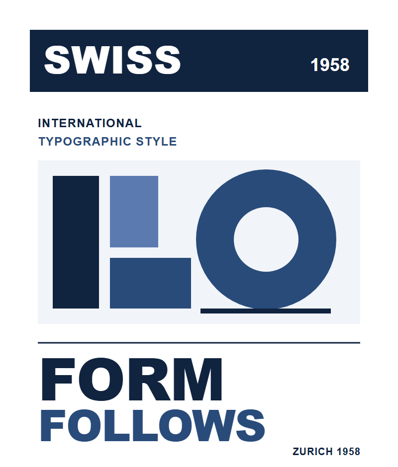

В середине XX века в Швейцарии появилось направление дизайна, которое называют международным типографическим стилем. Его развивали дизайнеры из Цюриха и Базеля. Они стремились к тому, чтобы зритель сразу видел главное.

В основе макета часто лежит сетка, по которой выравнивают текст и изображения. Заголовки обычно набирают шрифтом без засечек. Между элементами оставляют свободное пространство, чтобы они не сливались.
Сегодня эти принципы используют в печати и в интернете. Например, крупный заголовок помогает быстро понять, о чём страница. Ровные отступы помогают отделить один раздел от другого.